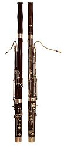

The bassoon is a woodwind instrument in the double reed family that typically
plays music written in the bass and tenor clefs, and occasionally the treble.
Appearing in its modern form in the 19th century, the bassoon figures
prominently in orchestral, concert band, and chamber music literature.
The
bassoon is a non-transposing instrument known for its distinctive tone color,
wide range, variety of character and agility. Listeners often compare its warm,
dark, reedy timbre to that of a male baritone voice. Someone who plays the
bassoon is called a bassoonist.
Etymology:
The word bassoon comes from French basson and from Italian bassone (basso with
the augmentative suffix -one).However, the Italian name for the same instrument
is fagotto.
Range:
(A1) B♭1–C5 (D5–G5)
The range of the bassoon begins at B♭1 (the first one below the bass staff) and
extends upward over three octaves, roughly to the G above the treble staff
(G5).
Higher notes are possible but difficult to produce, and rarely called for
or chestral and concert band parts rarely go higher than C5 or D5. Even
Stravinsky's famously difficult opening solo in The Rite of Spring only ascends
to D5.
Construction:

The bassoon disassembles into six main pieces, including the reed. The bell ,
extending upward; the bass joint (or long joint) , connecting the bell and the
boot; the boot , at the bottom of the instrument and folding over on itself; the
wing joint (or tenor joint) , which extends from boot to bocal; and the bocal
(or crook) , a crooked metal tube that attaches the wing joint to a reed .
Bassoons are double reed instruments like the oboe and the English horn.
A modern beginner's bassoon is generally made of maple, with medium-hardness
types such as sycamore maple and sugar maple preferred. Less-expensive models
are also made of materials such as polypropylene and ebonite, primarily for
student and outdoor use; metal bassoons were made in the past but have not been
produced by any major manufacturer since 1889.
The bore of the bassoon is
conical, like that of the oboe and the saxophone, and the two adjoining bores of
the boot joint are connected at the bottom of the instrument with a U-shaped
metal connector. Both bore and tone holes are precision-machined, and each
instrument is finished by hand for proper tuning.
The walls of the bassoon are
thicker at various points along the bore; here, the tone holes are drilled at an
angle to the axis of the bore, which reduces the distance between the holes on
the exterior. This ensures coverage by the fingers of the average adult hand.
Wooden instruments are lined with hard rubber along the interior of the wing and
boot joints to prevent damage from moisture; wooden instruments are also stained
and varnished. The end of the bell is usually fitted with a ring, either of
metal, plastic or ivory.
The joints between sections consist of a tenon fitting
into a socket; the tenons are wrapped in either cork or string as a seal against
air leaks.
The bocal connects the reed to the rest of the instrument and is
inserted into a socket at the top of the wing joint. Bocals come in many
different lengths and styles, depending on the desired tuning and playing
characteristics.
Folded upon itself, the bassoon stands 1.34 m (4 ft 5 in) tall, but the total
sounding length is 2.54 m (8 ft 4 in). Playing is facilitated by doubling the
tube back on itself and by closing the distance between the widely spaced holes
with a complex system of key work, which extends throughout nearly the entire
length of the instrument.
There are also short-reach bassoons made for the
benefit of young or petite players.
Development:
Music historians generally consider the dulcian to be the forerunner of the
modern bassoon, as the two instruments share many characteristics: a double reed
fitted to a metal crook, obliquely drilled tone holes and a conical bore that
doubles back on itself.
The origins of the dulcian are obscure, but by the
mid-16th century it was available in as many as eight different sizes, from
soprano to great bass. A full consort of dulcians was a rarity; its primary
function seems to have been to provide the bass in the typical wind band of the
time, either loud (shawms) or soft (recorders), indicating a remarkable ability
to vary dynamics to suit the need.
Otherwise, dulcian technique was rather
primitive, with eight finger holes and two keys, indicating that it could play
in only a limited number of key signatures.
The dulcian came to be known as fagotto in Italy. However, the usual etymology
that equates fagotto with "bundle of sticks" is somewhat misleading, as the
latter term did not come into general use until later.
Some think it may
resemble the Roman Fasces, a standard of bound sticks with an ax. A further
discrepancy lies in the fact that the dulcian was carved out of a single block
of wood—in other words, a single "stick" and not a bundle.
Circumstantial evidence indicates that the baroque bassoon was a newly invented
instrument, rather than a simple modification of the old dulcian. The dulcian
was not immediately supplanted, but continued to be used well into the 18th
century by Bach and others.
The man most likely responsible for developing the
true bassoon was Martin Hotteterre (d.1712), who may also have invented the
three-piece flûte traversière and the hautbois (baroque oboe). Some historians
believe that sometime in the 1650s, Hotteterre conceived the bassoon in four
sections (bell, bass joint, boot and wing joint), an arrangement that allowed
greater accuracy in machining the bore compared to the one-piece dulcian. He
also extended the compass down to B♭ by adding two keys.An alternate view
maintains Hotteterre was one of several craftsmen responsible for the
development of the early bassoon.
These may have included additional members of
the Hotteterre family, as well as other French makers active around the same
time. No original French bassoon from this period survives, but if it did, it
would most likely resemble the earliest extant bassoons of Johann Christoph
Denner and Richard Haka from the 1680s.
Sometime around 1700, a fourth key (G♯)
was added, and it was for this type of instrument that composers such as Antonio
Vivaldi, Bach, and Georg Philipp Telemann wrote their demanding music.
A fifth
key, for the low E♭, was added during the first half of the 18th century.
Notable makers of the 4-key and 5-key baroque bassoon include J.H. Eichentopf
(c. 1678–1769), J. Poerschmann (1680–1757), Thomas Stanesby, Jr. (1668–1734),
G.H. Scherer (1703–1778), and Prudent Thieriot (1732–1786).
Modern history:
Increasing demands on capabilities of instruments and players in the 19th
century—particularly larger concert halls requiring greater volume and the rise
of virtuoso composer-performers—spurred further refinement.
Increased
sophistication, both in manufacturing techniques and acoustical knowledge, made
possible great improvements in the instrument's playability.
The modern bassoon exists in two distinct primary forms, the Buffet system and
the Heckel system. Most of the world plays the Heckel system, while the Buffet
system is primarily played in France, Belgium, and parts of Latin America.
A
number of other types of bassoons have been constructed by various instrument
makers, such as the rare Galandronome.
Heckel
(German) system:
The design of the modern bassoon owes a great deal
to the performer, teacher, and composer Carl Almenräder. Assisted by the German
acoustic researcher Gottfried Weber, he developed the 17-key bassoon with a
range spanning four octaves.
Almenräder's improvements to the bassoon began with
an 1823 treatise describing ways of improving intonation, response, and
technical ease of playing by augmenting and rearranging the keywork. Subsequent
articles further developed his ideas. His employment at Schott gave him the
freedom to construct and test instruments according to these new designs, and he
published the results in Caecilia, Schott's house journal.
Almenräder continued
publishing and building instruments until his death in 1846, and Ludwig van
Beethoven himself requested one of the newly made instruments after hearing of
the papers. In 1831, Almenräder left Schott to start his own factory with a
partner, Johann Adam Heckel.
Heckel and two generations of descendants continued to refine the bassoon, and
their instruments became the standard, with other makers following. Because of
their superior singing tone quality (an improvement upon one of the main
drawbacks of the Almenräder instruments), the Heckel instruments competed for
prominence with the reformed Wiener system, a Boehm-style bassoon, and a
completely keyed instrument devised by Charles-Joseph Sax, father of Adolphe
Sax.
F.W. Kruspe implemented a latecomer attempt in 1893 to reform the fingering
system, but it failed to catch on. Other attempts to improve the instrument
included a 24-keyed model and a single-reed mouthpiece, but both these had
adverse effects on tone and were abandoned.
Coming into the 20th century, the Heckel-style German model of bassoon dominated
the field. Heckel himself had made over 1,100 instruments by the turn of the
20th century, and the British makers' instruments were no longer desirable for
the changing pitch requirements of the symphony orchestra, remaining primarily
in military band use.
Except for a brief 1940s wartime conversion to ball bearing manufacture, the
Heckel concern has produced instruments continuously to the present day. Heckel
bassoons are considered by many to be the best, although a range of Heckel-style
instruments is available from several other manufacturers, all with slightly
different playing characteristics.
Companies that manufacture Heckel-system
bassoons include: Wilhelm Heckel, Yamaha, Fox Products, W. Schreiber & Söhne,
Püchner,[9] Conn-Selmer, Linton, Moosmann Kohlert, Moennig/Adler, B.H. Bell,
Walter, Leitzinger and Guntram Wolf.
In addition, several factories in the
People's Republic of China are producing inexpensive instruments under such
labels as Laval, Haydn, and Lark, and these have been available in the West for
some time now. However, they are generally of marginal quality and are usually
avoided by serious players.
Because its mechanism is primitive compared to most modern woodwinds, makers
have occasionally attempted to "reinvent" the bassoon. In the 1960s, Giles
Brindley began to develop what he called the "logical bassoon," which aimed to
improve intonation and evenness of tone through use of an electrically activated
mechanism, making possible key combinations too complex for the human hand to
manage. Brindley's logical bassoon was never marketed.
Buffet (French) system:
The Buffet system bassoon achieved its basic acoustical properties somewhat
earlier than the Heckel. Thereafter, it continued to develop in a more
conservative manner.
While the early history of the Heckel bassoon included a
complete overhaul of the instrument in both acoustics and key work, the
development of the Buffet system consisted primarily of incremental improvements
to the key work. This minimalist approach of the Buffet deprived it of improved
consistency of intonation, ease of operation, and increased power, which is
found in Heckel bassoons, but the Buffet is considered by some to have a more
vocal and expressive quality.
The conductor John Foulds lamented in 1934 the
dominance of the Heckel-style bassoon, considering them too homogeneous in sound
with the horn. The modern Buffet system has 22 keys with its range being about
the same as the Heckel.
Compared to the Heckel bassoon, Buffet system bassoons have a narrower bore and
simpler mechanism, requiring different fingerings for many notes. Switching
between Heckel and Buffet requires extensive retraining.
Buffet instruments are
known for a reedier sound and greater facility in the upper registers, reaching
e'' and f'' with far greater ease and less air resistance. French woodwind
instruments' tone in general exhibits a certain amount of "edge," with more of a
vocal quality than is usual elsewhere, and the Buffet bassoon is no exception.
This type of sound can be beneficial in music by French composers, but has drawn
criticism for being too intrusive.
As with all bassoons, the tone varies
considerably, depending on individual instrument and performer. In the hands of
a lesser player, the Heckel bassoon can sound flat and woody, but good players
succeed in producing a vibrant, singing tone. Conversely, a poorly played Buffet
can sound buzzy and nasal, but good players succeed in producing a warm,
expressive sound, different from—but not inferior to—the Heckel.
Though the United Kingdom once favored the French system, Buffet-system
instruments are no longer made there and the last prominent British player of
the French system retired in the 1980s.
However, with continued use in some
regions and its distinctive tone, the Buffet continues to have a place in modern
bassoon playing, particularly in France, where it is
originated. Buffet-model bassoons are currently made in Paris by Buffet Crampon
and the atelier Ducasse (Romainville, France).
The Selmer Company stopped
fabrication of French system bassoons a few years ago. Some players, for example
the late Gerald Corey in Canada, have learned to play both types and will
alternate between them depending on the repertoire.